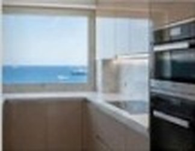
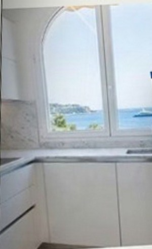
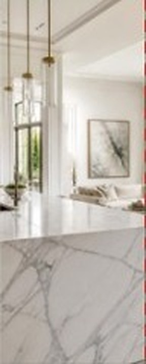
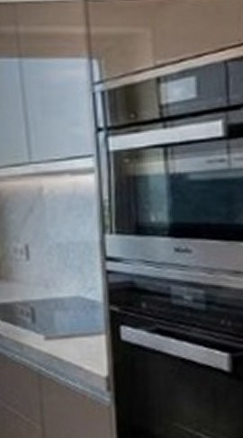

Une cuisine qui retrouve sa lumière.
Relooking de cuisine, sans travaux lourds, avec grande rapidité.
Une cuisine qui se ressent avant de se voir
Le même horizon sur la mer, une atmosphère d'exception. Nous gardons ce qui fait la valeur de votre intérieur et nous transformons tout le reste.




Une seule main pour toute la cuisine

Plans de travail et crédence
Plans et crédence pensés comme une seule surface, avec une finition raffinée.
Une esthétique maîtrisée
Lignes épurées et matières nobles, dans une écriture d'une grande cohérence.
Les électroménagers
Intégrés avec discrétion, au service de vos gestes du quotidien.
La partie technique
Tiroirs, éclairage et aménagements, pensés pour un confort fluide.
L'exigence de la matière, le geste de l'artisan
Marbre, pierres naturelles, essences de bois, métaux nobles et finitions choisies une à une.
- Idées raffinées, pensées pour votre cuisine
- Artisanat italien, du dessin à la pose
- Précision de chaque exécution


Un premier regard, sans engagement
Une lecture attentive de votre cuisine, en toute discrétion.
- 1
Visite à 360° de la cuisine
Sans vous déranger, à ce stade.
- 2
Carnet d'envies
Votre style, vos gestes, vos priorités.
- 3
Évaluation
Une estimation, puis une visite sur place.
Confidentialité et discrétion, dès le premier regard.
Une première rencontre, en toute discrétion
Avec votre interlocutrice privilégiée. Puis nos techniciens et architectes prennent le relais, de la conception à la livraison.